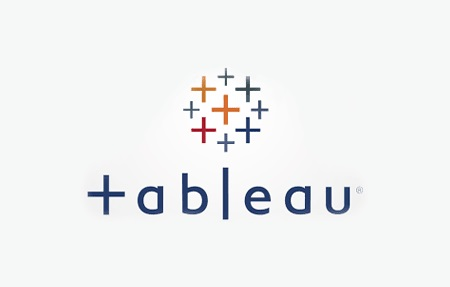

Google Chicago Cyclistic Case study
This case study contains analysis on how public in chicago use public bikes. You can download this data from my Kaggle .
This project shows how to ask objectives - obtain data - clean data - transform data and analyize data for insights. Moreover, I have shown my observations and insigts which can be helpful for this company on increasing their customers and revenue.
Bella Beat Analysis Case study

This case study is based on smart watch produced by bella beat manufacturer for women. Here, you can see I have performed data cleaning, transformation and analysis using R.
This project will show how to make end-to-end project for clients and how to make use of ggplot for visualization.

This is mini project which shows how to perform analysis on SQL.In this I used ER Diagram to classify relationships between entities and used queries to filter and analyze data according to most popular hastags.

This project shows how to perform exploratorty data analysis. Cleaning and transforming important columns and analyzing netflix data to observe difference between TV shows vs Movies.

This case study shows data visualization of USA superstore customers data through tableau. It shows how interactive charts and visualization can help understand copmlex data to non users easily.
UK Automotive gender classification
This project describes changes in UK's automotive industry with respect to gender. It shows how different gender have preferences over cars and how it changed over years.
Applied machine learning techniques to predict gender depending on car features.
This project is based on iris and ionosphere data prediction using machine learning model.It contains scratch code implementation for K nearest neighbours model and shows how to predict labels using machine learning.